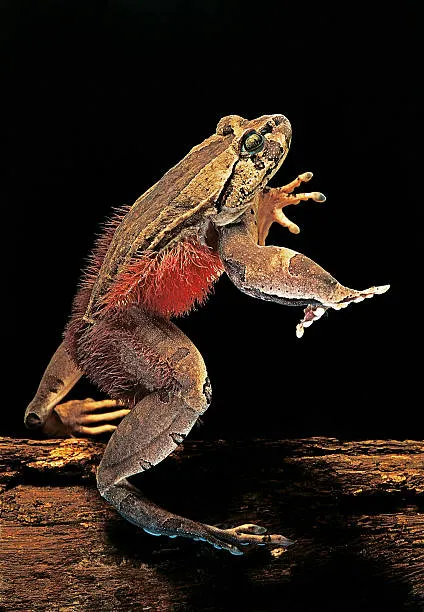

-
Goliath Frog (Conraua goliath)
-
Size: 32 cm (12.6 in);
up to 3.3 kg (7.3 lbs)
-
Habitat: Fast-flowing
rivers in Cameroon & Equatorial Guinea
-
Diet: Insects,
crustaceans, small amphibians
-
Unique Feature: The
largest frog in the world, known to move rocks for
nest-building
-
Conservation Status:
Endangered due to habitat destruction and poaching

-
Hairy Frog (Trichobatrachus robustus)
-
Size: 11 cm (4.3 in)
-
Habitat: Rainforests of
Cameroon, Nigeria, and the Congo
-
Diet: Insects, small
invertebrates
-
Unique Feature: Breaks
its own toe bones to form sharp claws for defense
-
Conservation Status Near
Threatened

-
Lake Oku Clawed Frog (Xenopus longipes)
-
Size: 4 cm (1.6 in)
-
Habitat: Endemic to Lake
Oku, Cameroon
-
Diet: Aquatic
invertebrates
-
Unique Feature: Fully
aquatic, has no tongue
-
Conservation Status
Critically Endangered
-
Ivory Coast Reed Frog (Hyperolius soror)
-
Size: 2-4 cm (0.8-1.6
in)
-
Habitat: Wetlands &
forests in Ivory Coast and Ghana
- Diet: Insects
-
Unique Feature: Changes
color from green during the day to brown at night
-
Conservation Status
Least Concern